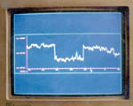

应力应变观测
（1） RZB-1型电容式钻孔应变测量仪
该仪器是用于测量地壳应力、应变场变动的地震前兆观测精密仪器。由探头，测量仪器和记录装置组成。探头中有四个高精度可变间隙式电容传感器，采用膨胀水泥固结于钻孔底部，用以测量钻孔四个方向孔径的微小变化。先进的感应耦合变压器比率臂技术和差动式电容位移传感器的应用，使该仪器具有极高的分辨力和工作范围，因而它既可用于研究变化微小的地球物理信号，又可用来记录工程建设中较大的区域地壳变形信号。1985年12月通过部级鉴定，鉴定评价该仪器达到国际先进水平。新疆乌什地震台应用该仪器的观测资料对1987年1月24日新疆乌什6.4级地震进行了成功的中、短、临预报。中国西部多地震地区布设的观测台网，在地震预报中发挥了明显的效能。
（2） TJ－Ⅱ型体积式钻孔应变仪
体积式钻孔应变仪是一种地震前兆观测精密仪器，以其力学原理简洁可靠、资料长期连续、寿命长、易维护等优点而受到美国、日本等国地震界的重视，全球已有九十余套在工作，我国华北地区已布设二十余套，在地震预报研究中发挥了重要作用。第一代仪器（TJ－Ⅰ型）1984年通过部级鉴定，1988年推出了改进的TJ－Ⅰ（A）型，1997年研制出性能指标更加优越的TJ－Ⅱ（A，B）型，并配有数字化数据自动采集系统。
地热观测
我所开发研制的SZW-1A型数字式温度计及WW-8型微机化石英温度计，灵敏度达万分之一度，可安装于100～600米深的钻孔中，长期连续观测地温变化。观测资料表明，地热观测是地震预报较为有效的地震前兆观测手段之一。目前已在地震系统的前兆台站推广安装。
数字化遥测技术
数字化遥测技术是从无人值守地点及时传回监测数据、遥控测点仪器工作状态的关键技术，提高监测系统的自动化水平。我所掌握有线（电话线）、短波、超短波遥测技术，可根据不同情况选择使用，先进的通讯软件可使遥测系统全双工工作，实现无差错传输，实时接收、处理、传送监测数据。我所已使河北、山东等区域地震前兆观测台网基本实现了数字化遥测。
地震观测台网建设
建设地（微）震观测台网是诱发地震研究的基础。根据研究范围的大小和工程的需要，我所可承建地震观测流动台网、临时台网和永久台网，备有短周期地震仪、宽频带地震仪、流动台设备和深井地震计等测震专用仪器，可实现无线实时数字化数据传输及数据处理。我所已完成大庆油田注水诱发地震、天生桥一级水电站水库诱发地震、山东某煤矿采矿诱发地震等项目的地（微）震遥测台网建设与相关研究工作。
数字地震前兆台网中心技术系统
数字地震前兆台网中心是以省为单位的数字地震前兆台网的网络中心，负责收集前兆台站产出的前兆数据，控制和管理台站的数据采集设备；处理和管理前兆数据；提供数据服务和数据共享与交换的功能。它既是前兆监测系统的重要组成部分，又是省局计算机网络的组成部分。
数字地震前兆台网中心技术系统由网络平台、数据库平台、应用软件、配套硬件等组成
* 网络平台以PC服务器为核心，4-8台微机组成局域网，网络操作系统为Windows NT 4.0中文版，运行TCP/IP协议，便于与省局计算机网络中心互连，并通过省局计算机网络进入INTERNET。
* 数字地震前兆台网中心的数据库管理系统采用MS SQL Server 6.5，在局域网内提供数据服务，在广域网上通过数据库复制实现前兆数据全国范围内的共享与交换。
* 在台网中心运行的应用软件主要有两个：地震前兆通信控制软件和地震前兆数据管理与服务软件。前者（与配套硬件配合使用）实现前兆数据的收集、转换及台站数据采集器的管理与控制；后者实现前兆数据的入库、提供一般性的数据服务。
* 与通信控制软件配套使用的硬件有：RS-232C多路转换控制卡：与有线通信单元配合，实现控制切换微机串口一转八；前兆台网中心有线通信单元：实现微机串口一转八，通过电话线收集台站前兆数据；GPS接收机：接收GPS卫星的标准时间信号，为台站数据采集设备对时。

1996年丽江7.0级地震地热前兆异常曲线 |